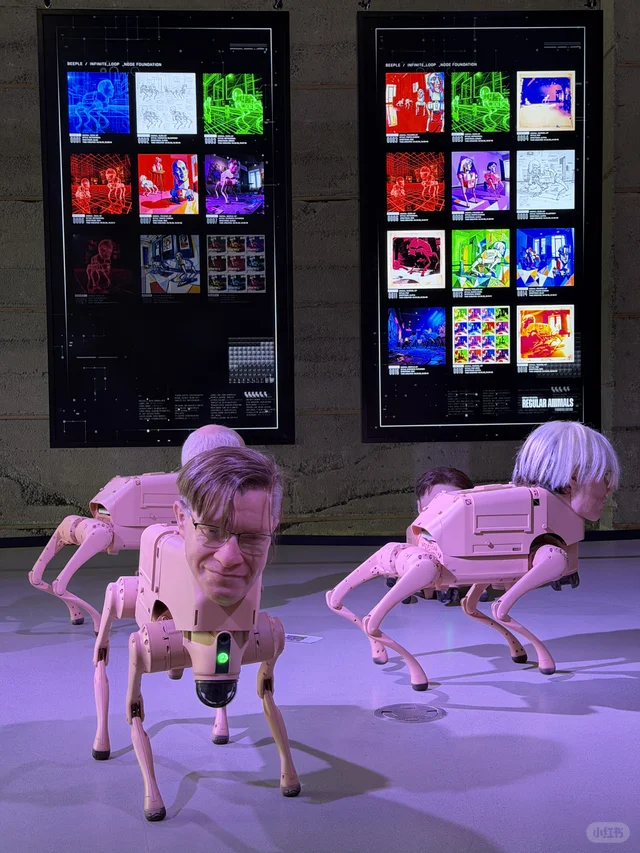
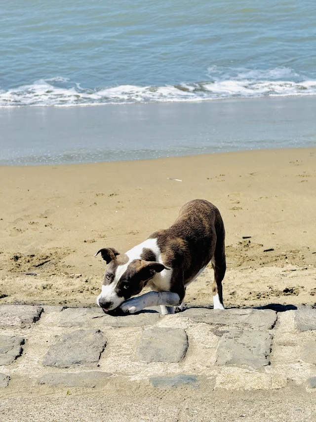
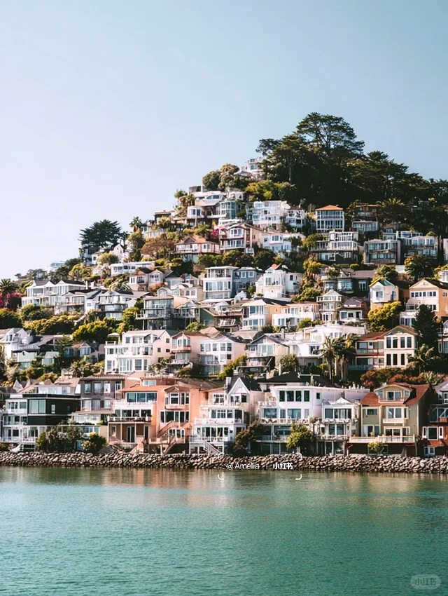
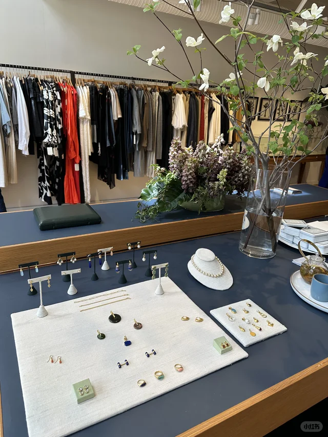
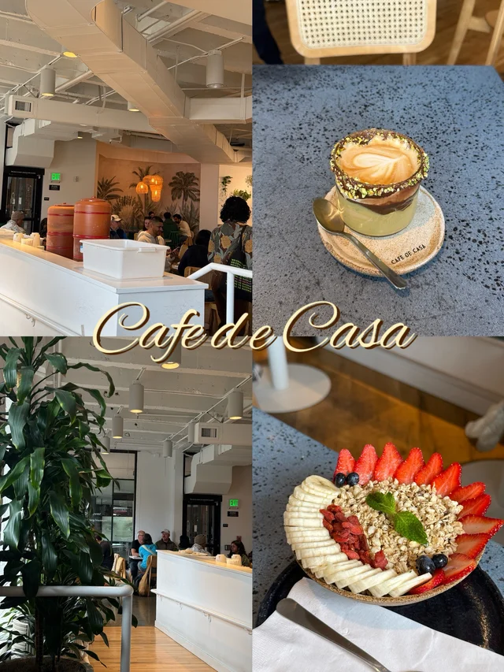

🎉活动与演出

「🍓本周长周末湾区精彩活动5/21-5/25」
正好赶上Memorial Day长周末，这篇精选了本周湾区最值得去的活动，懒人必备清单。

「湾区5/22-5/25长周末活动| 嘉年华+夜市+市集+博物馆」
嘉年华、夜市、免费博物馆全打包，适合一家老小一起出动，热闹又不贵。

「旧金山湾区5月活动✨杀糕节x马拉松x免费新展」
Bay to Breakers马拉松、蛋糕节和新展，5月的SF就是这么会玩。

「湾区限定｜Mulberry U Pick」
桑葚和樱桃U-Pick季节到了，带上篮子去果园里享受丰收的乐趣。
🎨艺术与文化

「湾区生活｜SF莫奈画展」
莫奈展正在SF展出，喜欢印象派的不要错过这次近距离欣赏的机会。

「SF Asian Art Museum盐田千春展✨」
亚洲艺术博物馆的盐田千春沉浸式红线装置，视觉震撼，出片绝佳。

「湾区｜SF Decorator Showcase 年度展又来了」
每年家居设计师最期待的年度展，喜欢室内设计的朋友绝对值得专门跑一趟。
「Startup Art Fair 旧金山小众艺术展」
小众又有趣的艺术展，逃离主流博物馆人潮的好选择。
🍜美食探店

「湾区｜开车一小时也要去吃的贵州烧椒鸡！好吃」
博主愿意开一小时去吃的店一定有点东西，馋贵州味的可以收藏起来。

「旧金山南边的不起眼宝藏fine dining」
南湾不起眼的宝藏fine dining，约会或庆祝纪念日的好选择。

「旧金山 $98 tasting menu 无敌好吃 😋」
98刀的tasting menu在SF算是性价比很高了，值得专程去体验。

「冬天一口暖暖的🍊Sunnyvale平价上海家常味」
Sunnyvale的上海家常味，价格亲民、味道地道，想家的时候去坐坐。
🌲户外自然

「SF湾区走过最棒的trail！走完爱上了SF！」
博主走完直呼爱上SF的trail，长周末安排一次徒步刚好。

「旧金山 Land's End 陆地尽头」
Land's End的海岸线视野绝佳，是SF最治愈的徒步路线之一。

「旧金山周末海边小镇Sausalito一日攻略🏔️」
过桥就到的海边小镇Sausalito，悠闲一日游的经典选择。

「湾区桃花源记——Djerassi艺术徒步」
在艺术装置间徒步的Djerassi，是湾区少有人知的桃花源。
💎宝藏地点

「湾区茶室，适合找个雨后点一壶茶，读一本书」
雨后的茶室、一壶茶、一本书，治愈系INFP必去打卡点。

「🌲湾区周末逃离计划 📍Dawn Ranch」
想短暂逃离城市的话，Dawn Ranch是个被红杉包围的世外桃源。

「加州湾区-周末好去处，隐藏在海边的家居店🏄」
海边藏着的家居店，逛店+看海一次满足，文艺青年友好。

「三藩100个温暖小店｜the Yonder Shop」
SF温暖小店系列里的Yonder Shop，适合慢逛慢淘的周末午后。